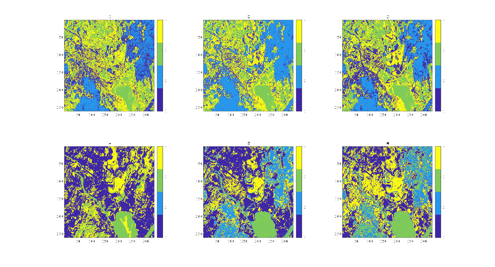
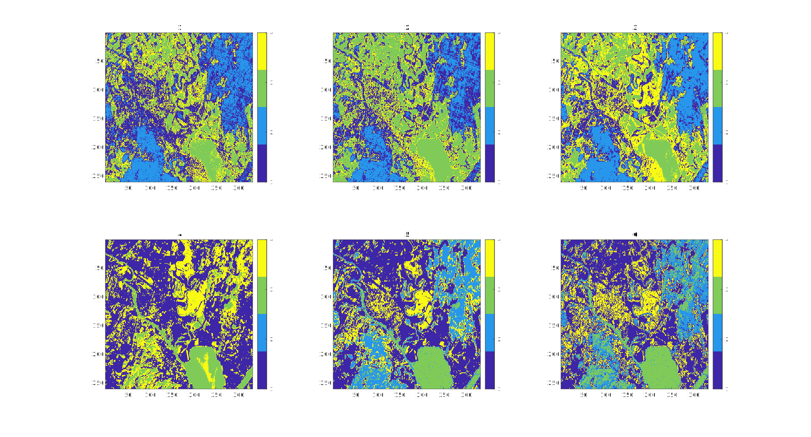

Here, you can find the proposed solutions for the sixth exercise set, written in Matlab.
If you find any errors or wish to discuss your results compared to the results presented here, please feel free to send an email or ask in the group sessions!
close all
% Read mask
class_train_mask = double(imread('tm_train.png'));
num_classes = 4;
% Estimate a priory probability (if one want to)
P = zeros(1,num_classes);
for ii = 1:num_classes
P(ii) = sum(sum(class_train_mask == ii));
end
P = P./sum(P);
% Read in the images
n = 260; m = 333;
num_bands = 6;
data = zeros(n,m,num_bands);
for ii = 1:num_bands
data(:,:,ii) = imread(sprintf('tm%d.png',ii));
end
% Classify
est_imgs = zeros(n,m,num_bands);
for ii = 1:num_bands
tmp_data = double(data(:,:,ii));
class_means = zeros(1,num_classes);
class_stds = zeros(1,num_classes);
% train
for jj = 1:num_classes
class_tmp_data = tmp_data(class_train_mask == jj);
class_means(jj) = mean(class_tmp_data);
class_stds(jj) = sqrt(var(class_tmp_data));
end
% perform the classification
for k = 1:n
for l = 1:m
% outcomment P in the calculation for p if you wish to assume
% uniform a priory probability for each class, as it won't
% affect the value of p for each class.
p = (1./class_stds) .* exp(-.5.*( (tmp_data(k,l) - class_means) ./ class_stds ).^2 );%.*P; % factor 1/sqrt(2*pi) does not have that much to say.
[~, est_imgs(k,l,ii)] = max(p);
end
end
end
% Find test accuracy
class_test_mask = imread('tm_test.png');
tot_test = sum(sum(class_test_mask > 0));
for ii = 1:num_bands
test_data = data(:,:,ii);
estimated_data = est_imgs(:,:,ii);
tot_correct = 0;
fprintf('band %d -----\n',ii);
for jj = 1:num_classes
class_est_test = estimated_data(class_test_mask == jj);
num_correct = sum(class_est_test == jj);
tot_correct = tot_correct + num_correct;
fprintf('for class %d, there was %g percent correctly classifications.\n', ...
jj, num_correct/numel(class_est_test == jj)*100);
end
fprintf('Total number of correct classifications: %g percent\n',tot_correct/tot_test*100);
end
% Plot original images and classified images
figure()
for ii = 1:num_bands
subplot(2,3,ii)
imagesc(data(:,:,ii))
end
figure()
for ii = 1:num_bands
subplot(2,3,ii)
imagesc(est_imgs(:,:,ii))
title(sprintf('%d',ii))
colormap(parula(num_classes));
colorbar('Ticks',1:4 );
end
figure()
imagesc(class_test_mask)
The program is available here (right click and press "save link as").
After the group session, it was found out that it matters a bit how you decide to choose the a priory probability for the final outcome.
The results that were obtained from the program assuming an uniform a priory probability between the classes, were
Figure 1: Assuming equal a priory probability for P.

band 1 -----
for class 1, there was 24.0602 percent correctly classifications.
for class 2, there was 64.3059 percent correctly classifications.
for class 3, there was 83.2239 percent correctly classifications.
for class 4, there was 69.6573 percent correctly classifications.
Total number of correct classifications: 61.4108 percent
band 2 -----
for class 1, there was 26.1423 percent correctly classifications.
for class 2, there was 95.6091 percent correctly classifications.
for class 3, there was 91.6119 percent correctly classifications.
for class 4, there was 60.5607 percent correctly classifications.
Total number of correct classifications: 72.963 percent
band 3 -----
for class 1, there was 40.9485 percent correctly classifications.
for class 2, there was 80.949 percent correctly classifications.
for class 3, there was 92.2183 percent correctly classifications.
for class 4, there was 64.3614 percent correctly classifications.
Total number of correct classifications: 71.9184 percent
band 4 -----
for class 1, there was 81.9549 percent correctly classifications.
for class 2, there was 0 percent correctly classifications.
for class 3, there was 80.5457 percent correctly classifications.
for class 4, there was 78.3801 percent correctly classifications.
Total number of correct classifications: 52.4641 percent
band 5 -----
for class 1, there was 47.0792 percent correctly classifications.
for class 2, there was 66.3952 percent correctly classifications.
for class 3, there was 96.665 percent correctly classifications.
for class 4, there was 70.5919 percent correctly classifications.
Total number of correct classifications: 70.4805 percent
band 6 -----
for class 1, there was 25.5639 percent correctly classifications.
for class 2, there was 64.9079 percent correctly classifications.
for class 3, there was 96.766 percent correctly classifications.
for class 4, there was 81.433 percent correctly classifications.
Total number of correct classifications: 67.5556 percent
Estimating the a priory probability from the training set gave
Figure 2: Estimating the a priory probability for P.

band 1 -----
for class 1, there was 48.3516 percent correctly classifications.
for class 2, there was 64.3059 percent correctly classifications.
for class 3, there was 83.2239 percent correctly classifications.
for class 4, there was 48.0997 percent correctly classifications.
Total number of correct classifications: 62.3203 percent
band 2 -----
for class 1, there was 34.7021 percent correctly classifications.
for class 2, there was 50.5312 percent correctly classifications.
for class 3, there was 99.1915 percent correctly classifications.
for class 4, there was 35.5763 percent correctly classifications.
Total number of correct classifications: 56.0526 percent
band 3 -----
for class 1, there was 40.9485 percent correctly classifications.
for class 2, there was 80.949 percent correctly classifications.
for class 3, there was 92.2183 percent correctly classifications.
for class 4, there was 64.3614 percent correctly classifications.
Total number of correct classifications: 71.9184 percent
band 4 -----
for class 1, there was 81.9549 percent correctly classifications.
for class 2, there was 0 percent correctly classifications.
for class 3, there was 80.5457 percent correctly classifications.
for class 4, there was 78.3801 percent correctly classifications.
Total number of correct classifications: 52.4641 percent
band 5 -----
for class 1, there was 58.9936 percent correctly classifications.
for class 2, there was 66.3952 percent correctly classifications.
for class 3, there was 96.665 percent correctly classifications.
for class 4, there was 59.6885 percent correctly classifications.
Total number of correct classifications: 70.8615 percent
band 6 -----
for class 1, there was 46.9636 percent correctly classifications.
for class 2, there was 64.9079 percent correctly classifications.
for class 3, there was 96.766 percent correctly classifications.
for class 4, there was 54.6417 percent correctly classifications.
Total number of correct classifications: 66.8182 percent
It is difficult to give a proper definition of the a priory probability. One has to take into account how much you know beforehand of your set. As one can see from the results, the percentages differs - for some bands a bit and some band more. Estimating the the a priory probability might not give the whole image of your region if one has few samples being the ground truth, but assuming equal probability might not be true either.
close all
% 1.
mnist_labels=loadmnistlabels('train-labels.idx1-ubyte');
mnist_imgs=loadmnistimages('train-images.idx3-ubyte');
% 2.
num_train = 30000;
num_valid = 30000;
data_sz = size(mnist_imgs(:,1),1);
mnist_train_labels = mnist_labels(1:num_train,1);
mnist_train_imgs = mnist_imgs(:,1:num_train);
valid_labels = mnist_labels((num_train + 1):(num_train + num_valid),1);
valid_imgs = mnist_imgs(:,(num_train + 1):(num_train + num_valid));
% 3.
figure()
for i = 1:10
subplot(2,5,i)
imshow(reshape(mnist_imgs(:,i),28,28),'InitialMagnification','fit')
end
% 4.
first_pixel = mnist_imgs(1,:);
fprintf('Variance of the first pixel at every data: %g\n', var(double(first_pixel)))
% 5.
num_classes = 10;
class_means = zeros(data_sz,num_classes);
for ii = 1:num_classes
class_means(:,ii) = mean(mnist_train_imgs(:,mnist_train_labels == ii-1),2);
end
estimated_imarr_labels = zeros(1, num_valid);
for ii = 1:num_valid
[~, est_class] = min(vecnorm(bsxfun(@minus, valid_imgs(:,ii), class_means))) ;
estimated_imarr_labels(ii) = est_class-1;
end
fprintf('percentage of correctly classified samples using mean: %g percent\n', (sum(estimated_imarr_labels(:) == valid_labels(:))/num_valid*100) );
sz = round(sqrt(data_sz));
figure()
for ii = 1:num_classes
subplot(2,5,ii)
imagesc(reshape(class_means(:,ii), sz, sz))
end
% 6.
rng(5520);
cell_sz = [2,4,8];
num_train_samples = 5;
r = randi([1 num_train],1,num_train_samples);
for ii = 1:length(cell_sz)
c = cell_sz(ii);
figure()
for jj = 1:num_train_samples
[~, hogVisualization] = extractHOGFeatures(reshape(mnist_train_imgs(:,r(jj)), sz, sz), ...
'CellSize', [c, c]);
subplot(1,num_train_samples,jj)
plot(hogVisualization)
title(sprintf('cell size = %d, img nr. %d',c,jj))
end
end
figure()
for ii = 1:num_train_samples
subplot(1,num_train_samples ,ii)
imagesc(reshape(mnist_train_imgs(:,r(ii)), sz, sz))
title(sprintf('image nr. %d',ii))
end
% 7.
c = cell_sz(1);
[hogfeatures, hogVisualization] = extractHOGFeatures(reshape(mnist_train_imgs(:,1), sz, sz), ...
'CellSize', [c, c]);
num_hogfeatures = length(hogfeatures);
hogfeatures = zeros(num_hogfeatures, num_train);
for ii = 1:num_train
hogfeatures(:,ii) = extractHOGFeatures(reshape(mnist_train_imgs(:,ii), sz, sz), ...
'CellSize', [c, c]);
end
hogfeatures_means = zeros(num_hogfeatures,num_classes);
for ii = 1:num_classes
hogfeatures_means(:,ii) = mean(hogfeatures(:,mnist_train_labels == ii-1),2);
end
estimated_valid_labels_hog = zeros(1, num_valid);
for ii = 1:num_valid
hogvalid = extractHOGFeatures(reshape(valid_imgs(:,ii), sz, sz), ...
'CellSize', [c, c]);
[~, est_class] = min(vecnorm(bsxfun(@minus,hogvalid.',hogfeatures_means))) ;
estimated_valid_labels_hog(ii) = est_class-1;
end
fprintf('percentage of correctly classified samples using HOG: %g percent\n', (sum(estimated_valid_labels_hog(:) == valid_labels(:))/num_valid*100) );
% 8.
imarr = load('imarr.mat');
imarr = imarr.imarr ;
figure()
for ii=1:6
subplot(2,3,ii);
imagesc(reshape(imarr(ii*10,:,:),28,28))
colormap gray
title(sprintf('image nr. %d', ii*10))
end
% 9.
imarrneg = double(imcomplement(imarr));
% 10.
figure()
for ii=1:10
subplot(2,5,ii);
imagesc(reshape(imarrneg(90+ii,:,:),28,28))
colormap gray
title(sprintf('image nr. %d', 90+ii))
end
rng(5520);
% make label matrix
labels_num = [1:9 0];
labels = repelem(labels_num,10);
imarr_flat = imarrneg(:,:);
% make a choice of which samples to use for training
indices = randperm(100);
% take num_training out, leave 100-num_training percent
num_training = 50;
num_test = 100 - num_training;
training_inds = indices(1:num_training);
test_inds = indices((num_training+1):100);
train_imarr = imarr_flat(training_inds,:);
train_imarr_labels = labels(training_inds);
test_imarr = imarr_flat(test_inds,:);
test_imarr_labels = labels(test_inds);
figure()
for ii=1:20
subplot(4,5,ii)
imagesc(reshape(train_imarr(ii,:),28,28))
title(sprintf('label nr. %d',train_imarr_labels(ii)))
end
% classify using means of the image pixels
data_sz = 28*28;
num_classes = 10;
class_means = zeros(data_sz,num_classes);
for ii = 1:num_classes
class_means(:,ii) = mean(train_imarr(train_imarr_labels == labels_num(ii),:),1);
end
figure()
for ii=1:num_classes
subplot(2,5,ii)
imagesc(reshape(class_means(:,ii),28,28))
title(sprintf('%d',labels_num(ii)))
end
estimated_imarr_labels = zeros(1, num_test);
for ii = 1:num_test
[~, est_class] = min(vecnorm(bsxfun(@minus, test_imarr(ii,:).', class_means))) ;
estimated_imarr_labels(ii) = labels_num(est_class);
end
fprintf('percentage of correctly classified imarr samples using mean: %g percent\n', (sum(estimated_imarr_labels(:) == test_imarr_labels(:))/num_test*100) );
% classify using hog
sz = 28;
c = 4;
[hogfeatures, hogVisualization] = extractHOGFeatures(reshape(train_imarr(1,:), sz, sz), ...
'CellSize', [c, c]);
num_hogfeatures = length(hogfeatures);
hogfeatures = zeros(num_hogfeatures, num_training);
for ii = 1:num_training
hogfeatures(:,ii) = extractHOGFeatures(reshape(train_imarr(ii,:), sz, sz), ...
'CellSize', [c, c]);
end
hogfeatures_means = zeros(num_hogfeatures,num_classes);
for ii = 1:num_classes
hogfeatures_means(:,ii) = mean(hogfeatures(:,train_imarr_labels == labels_num(ii)),2);
end
estimated_imarr_labels_hog = zeros(1, num_test);
for ii = 1:num_test
hogvalid = extractHOGFeatures(reshape(test_imarr(ii,:), sz, sz), ...
'CellSize', [c, c]);
[~, est_class] = min(vecnorm(bsxfun(@minus,hogvalid.',hogfeatures_means))) ;
estimated_imarr_labels_hog(ii) = labels_num(est_class);
end
fprintf('percentage of correctly classified imarr samples using HOG: %g percent\n', (sum(estimated_imarr_labels_hog(:) == test_imarr_labels(:))/num_test*100) );
% 10
Mdl = fitcknn(train_imarr,train_imarr_labels.','NumNeighbors',3,'Standardize',0);
knnlabel = predict(Mdl,test_imarr);
fprintf('percentage of correctly classified imarr samples using knn: %g percent\n', sum(knnlabel.' == test_imarr_labels)/num_test*100)
The program is available here (right click and press "save link as").
The results from this program are
percentage of correctly classified samples using mean: 81.1633 percent
percentage of correctly classified samples using HOG: 91.4933 percent
percentage of correctly classified imarr samples using mean: 30 percent
percentage of correctly classified imarr samples using HOG: 64 percent
percentage of correctly classified imarr samples using knn: 30 percent